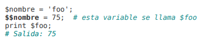

Tipos de Datos & Manejo de Variables & Constantes Predefinidas
Tipos de Datos
| Tipo | Descripción |
|---|---|
| integer | Números enteros |
| float | Números reales en coma flotante |
| string | Cadena de caracteres |
| boolean | Buleanos, TRUE o FALSE |
| array | Colección de elementos identificados |
| object | Es una instancia de una clase |
| callable | Para las funciones de callback |
| null | Valores variables no asignados |
| resource | Representa recuros externos |
isset — Determina si una variable está definida y no es NULL
Variables booleanas TURE Y NULL no se muestran en php, se asocian a variables pero solo representan 0, 1, null, etc. TRUE -> 1 FALSE -> 0
Manejo de Variables
Funciones Manejo de VariablesOperadores Aritméticos
Diferencia entre comillas dobles y simples: Las comillas dobles permiten introducir dentro variables y las toma por su valor. Las comillas simples toman la variable como literal, como string.
- Variables Globales
- Son las variables declaradas como "global" y son accesible en todo el fichero, si se declaran fuera de las funciones son globales por defecto.
- Variables Locales
- Son las variables declaradas dentro de una función, y accesibles solo en estas, no son accesibles fuera de la función.
- Variables SuperGlobales
-
Las variables súper globales son -a nivel ámbito- variables
globales y se diferencian de éstas en que: • No son definidas por
el programador, sino que vienen incorporadas al lenguaje; • No
necesitan ser llamadas mediante global;
- $GLOBALS
- $_SERVER
- $_GET
- $_POST
- $_FILES
- $_COOKIE
- $_SESSION
- $_REQUEST
- $_ENV
Tipos de variables
Hay 4 tipos de variables:
- Variables:
- Variables Convencionales
- Variables estáticas:
-
Aquellas variables locales que conservan su valor tras la
ejecución de la función o método que las declara.
- Variables de variables
- Las variables variables son una forma de definir variables -locales o globales- en tiempo de ejecución y resultan ideales en instrucciones iterativas. Son variables cuyo nombre, se define en tiempo de ejecución dejando disponible una nueva variable. 
- Variables Constantes
-
Se pueden definr con "define()" o con "const". Con define se crean
constantes para clases y con const son constantes globales.
define('FOO', 1);
const FOO = 1;
Constantes Predefinidas
Constantes mágicasConstantes predefinidad del núcleo